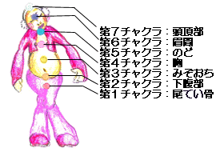

瞑
想
meditation
| 瞑想って？ 瞑想って聞くと「なんだかむずかしそう…」と思う人も多いでしょう。雑念を払うとか無の境地とか…。禅寺などで座禅を組むときにはそういったことがよくいわれますが、瞑想と座禅はちょっと違います。瞑想は、からだを流れている“気”といわれているエネルギーの流れをイメージしながらそれを感じ、その流れをさらに円滑にするというもの。このとき、チャクラといわれるいくつかのポイントにエネルギーの流れを通過させてゆきます。またチャクラでは、その時に抱えている問題、例えば人間関係や仕事、自分自身の生き方など、さまざまなことが原因になり、エネルギーの流れがとどこおります。エネルギーの流れがとどこれば、精神的にも肉体的にも問題が発生してしまいます。瞑想をすることによって、各チャクラで自分にさまざまな問いかけをして、流れのとどこおる原因をさぐり、抱えている問題を解決できるようなヒントなどをつかむこともできるようになります。 |
チャクラって？ 瞑想って？でお話した通り、"気"の通りみちであるチャクラと瞑想は一つのセットのようなものです。チャクラには、大きく分けてつぎの７つのポイントがあります。 |

|
また、チャクラにはそれぞれ表わされてくる事柄があります。その事柄について日頃から違和感を抱いていたりなにか問題があったりする場合、そのチャクラのポイントでエネルギーの流れはとどこおってしまい、心やからだに異常が現れてきます。チャクラで表わされるそれぞれの事柄は、ふだんなんとなく抱いている違和感や問題をあなた自身にあらためて問いかける題材であり、何が自分にとって本当に良いことなのか、悪いことなのかを気づかせてくれるのです。 チャクラで表わされるそれぞれの事柄(問いかけの題材)は、次のとおりです。 |
第１チャクラ : 生きるための活力について。また、自分と関わる集団、たとえば会社や学校などが与える影響と自分との関係の問題について。 第２チャクラ : 人間関係について。創造することについて。また、物質と自分との関係について。例えば物欲や性欲のコントロールなど。 第３チャクラ : 自分の内面的なことについて。自分のアイデンティティと自分を取り巻く全てのものとの関係について。また、自分の中での物理的なことと精神的なことのつながりについて。 第４チャクラ : 愛について。異性関係だけでなく家族愛や人間愛など普遍的な愛も含める。許すことについて。あらゆる感情的な問題について。 第５チャクラ : 意志について。他の人に対して、ゆずれない意志をつらぬくことについて。自分を信じぬくことについて。 第６チャクラ : 直感やひらめきについて。瞬間的に正しい判断をくだすことについて。また、大きな力に生かされていると感じることについて。 第７チャクラ : 自分のもつ潜在能力について。体を流れるエネルギーの解放について。また、祈ることや大きな力とのつながりを感じることについて。 |
ヒーリングとの関係 心身のバランスを整え、抱えている問題を解決するというヒーリングの基本からいって、エネルギーの流れを潤滑にする瞑想自体がすでにヒーリングになります。 しかし、さまざまなヒーリング方法を一緒に行うことで、瞑想をしやすくしたり、チャクラのそれぞれのポイントに対応するヒーリングアイテムを使えば、重点的なヒーリングをそのチャクラに行うことができ、エネルギーの流れをより活性化させることもできます。 チャクラとヒーリングアイテムを色・香り・石・音別に表にしてまとめてみました。 |
チャクラが表す事柄とヒーリングアイテム
| チャクラ |
位置 |
事柄 |
色 |
香り |
石 |
音 |
| 第７チャクラ | 頭頂部 | 精神的解放・気の解放 潜在能力を引き出す |
クリア 白 |
花の部分 ラベンダー･イランイランなど |
クリア･白の石 クリアクオーツ･ダイアモンドなど |
Ｂ |
| 第６チャクラ | 眉間 | 直感 瞬間的に正しい判断をする力 |
紫 青 |
果実の部分 レモン･マンダリンなど |
紫･青の石 ラピスラズリ･アメシストなど |
A |
| 第５チャクラ | のど | 意志 表現力 |
水色 | 葉の部分 パチュリ･フェンネルなど |
水色の石 ターコイズ･アクアマリンなど |
Ｇ |
| 第４チャクラ | 胸 | 愛 許し・穏やかさ |
緑 ピンク |
枝葉の部分 ティートリー･サイプレスなど |
緑･ピンクの石 ローズクオーツ･ペリドットなど |
Ｆ |
| 第３チャクラ | みぞおち | 健康 自分の内面と外的環境の関係 |
黄 | 幹の部分 フランキンセンス･サンダルウッドなど |
黄色の石 シトリン･サンストーンなど |
Ｅ |
| 第２チャクラ | 下腹部 | 創造力・アイデンティティ 人間関係・物質との関係 |
オレンジ | 根や果実の部分 ブラックペッパー･カルダモンなど |
オレンジの石 カーネリアン･めのうなど |
Ｄ |
| 第１チャクラ | 尾てい骨 | 活力・生命力 自分と関わる集団との関係 |
赤 黒 |
根の部分 ジンジャー･ターメリックなど |
赤･黒の石 オニキス･ガーネットなど |
Ｃ |
| 瞑想の方法 瞑想をはじめる前に、まずリラックスし、内面へ気持ちを向けられる環境を整えます。ヒーリングアイテムを使ってもいいですし、ただ何もせずにじっと心を落ち着けるのもいいでしょう。チャクラを流れるエネルギーをイメージしやすいのは、背骨を伸ばして座ったあぐらをかくような姿勢ですが、楽に座れるような状態であればどんな姿勢でも構いません。精神を集中できるように、なるべく静かな場所で行ないましょう。 精神的に不安定なときに瞑想をすると、かえって落ち込んでしまったりすることもありますので注意しましょう。 |
LIGHT : ちょっと体験してみたい・ 短時間で行いたい
DEEP : しっかり瞑想したい ・ 時間をかけて行いたい
|
瞑想の方法 ： LIGHT step1: 第１チャクラから第７チャクラを下から上へ背骨にそって意識します。目をつむり、気やエネルギーといったものの流れが、下からゆっくりと流れていくようにイメージしてください。このとき、手のひらに乗るくらいの大きさの光のボールを思い浮かべます。そのボールが下から上へのぼってゆくようにイメージするとチャクラを意識しやすくなります。 step2: step1を繰り返しながら、息を深く吸い込みゆっくりと吐き出します。呼吸はなるべく腹式呼吸を行ないます。息を吸うときはおなかにゆっくりと空気を吸うようにし、吐き出すときはおなかと肺の中を空っぽにするようにゆっくりと吐き出してください。 step3: 最後に第7チャクラ(頭頂部) から今まで流れていた気やエネルギーを解放します。このとき、からだや心にたまっていたもので、自分にとっていらないと感じるものも一緒に放出するようにイメージしてください。 |
行なう時間にとくに制限はありませんが、気分がすっきりするくらいがよいでしょう。
| 瞑想の方法
： DEEP step1: まず、ゆっくりと呼吸をします。そして、今抱えている問題を考えます。持ち続けているわだかまりやこだわりなどはないか、怒りや悲しみといったマイナス方向に向いている力を持っていないかなどを問いかけてみましょう。 step2: 呼吸を深くしながら、第１チャクラから第７チャクラまでエネルギーが昇ってゆくのをイメージします。（瞑想の方法：LIGHTを参考に） step3: 深い呼吸を続けながら、それぞれのチャクラに関連する事柄を下から順番に感じ、第7チャクラでエネルギーを解放します。 第1チャクラ：生きるという力を感じる。自分自身を今の人生に根づかせるような活力を感じる。また、自分が属している集団が自分にとってどんな役割を果たしているのかを考える。 第2チャクラ：自分の中にある創造力を感じる。物理的なこと肉体的なことにとらわれすぎていないか、それらをコントロールできているかをチェックする。また、人生の中で出会う全ての人々は、何かを自分に教えてくれる“先生”と考える。 第3チャクラ：自分という存在を感じる。全てのバランスの中心がここにあることを感じる。また自分の精神的なものと自分を取り巻く物理的なものとの関わりを考える。 第4チャクラ：愛の力を感じる。自分を含め全ての存在に対してどのように愛を与えているか、どんな愛を受けているかを考える。また、許すという形の愛を持ち続けているかどうかチェックする。 第5チャクラ：表現する力と意志の力を感じる。自分を含め全ての存在に対して伝えるべきことを把握し伝えているかを考える。また自分を信じぬくことができるか、自分の言動に自分自身が信頼をおけるのかをチェックする。 第6チャクラ：直感力、客観的な判断力を感じる。自分の直感を信じているか、また瞬時にインスピレーションに従い、本当に正しい判断ができているかどうかをチェックする。 第7チャクラ：大きな力との接点を感じる。持ち続けている全てのわだかまりやこだわり、この瞑想で第１チャクラから順に感じ、そして受け入れた全てのものを手放し、頭頂部からエネルギーを解放する。 |
時間などを気にすることなくマイペースに行いましょう。